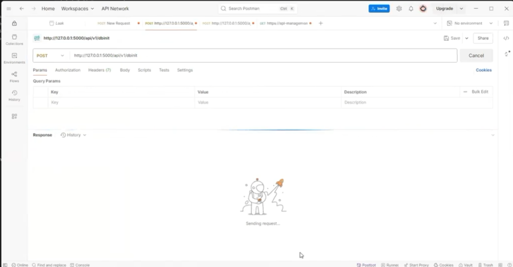
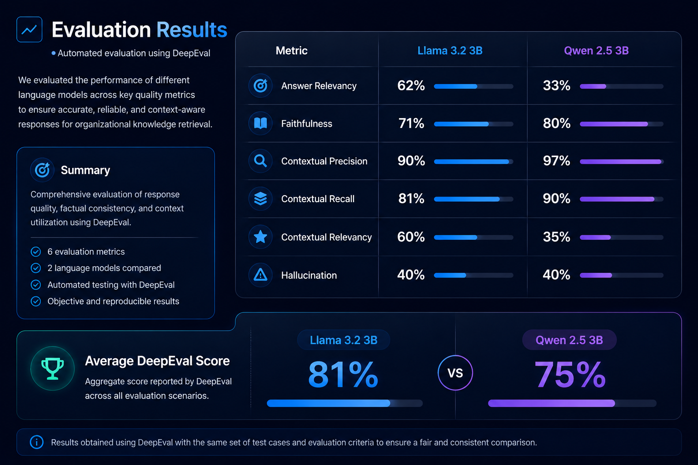
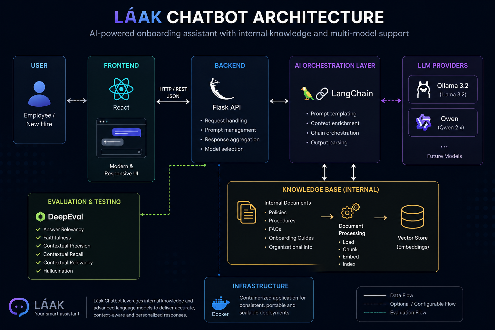

Chatbot Gallery



AI-powered onboarding assistant designed to improve employee integration through personalized responses and contextual knowledge retrieval.
Láak Chatbot is an intelligent assistant developed as the final project of my Master's Degree in Artificial Intelligence. The system was designed to guide new employees during onboarding processes by providing personalized responses based on an internal organizational knowledge base.
The chatbot was implemented as a locally hosted web application, providing a secure and controlled environment for organizational use.
One of its most innovative capabilities is the use of an internal knowledge database that enriches the language model context, allowing responses to be aligned with company culture, procedures, and onboarding requirements.
Users can dynamically switch between multiple language models such as Ollama 3.2 and Qwen, enabling performance comparisons and adaptation to different use cases.
Personalized responses based on an internal organizational database.
Support for multiple LLM providers including Ollama and Qwen.
Structured comparison of language model performance and quality.
Reduced training effort and accelerated employee integration.
Láak Chatbot was designed using a modular architecture that separates the user interface,
business logic, language model orchestration, and organizational knowledge base.
This approach allows the system to remain scalable, maintainable,
and adaptable to different language models while providing contextualized responses based on internal company information.

High-level architecture showing the interaction between the frontend, Flask API, LangChain orchestration layer, internal knowledge base, and supported language models.
To evaluate language model quality and reliability, DeepEval was used to perform systematic testing.

